Что посмотреть в Трабзоне
|26 сентября 2023
Трабзон - небольшая провинция на берегу чёрного моря Турции. Но он гораздо интереснее, чем вы предполагаете! Здесь есть куда поехать и что посмотреть. В статье покажем вам наверное самые красивые места Турции - и все это не более чем в ста километров от Трабзона!
Содержание
Панагия Сумела
Пещеры Чал
Трабзонский аквариум
Ботанический сад Трабзона
Женский монастырь
Forum Trabzon
Озеро Uzungol
Чайные плантации
Холм Бозтепе
Водопад Гоксу
Плато Айдер
Видео-обзор
Панагия Сумела
Монастырь Панагия Сумела - один из старейших православных монастырей в мире. Построен в начале 5 века. Находится в 50 км к юго-востоку от Трабзона, рядом с городком Мачка. Является главной христианской достопримечательностью Турции и местом паломничества как православных, так и католиков.
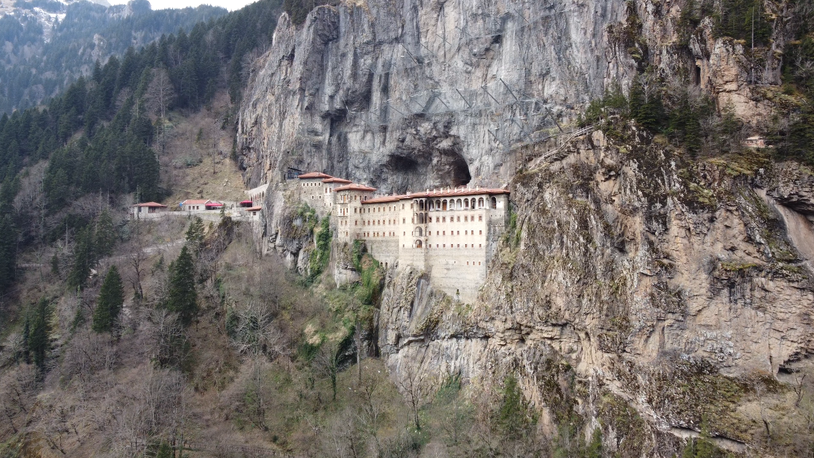Монастырь имеет очень необычное местоположение - он высечен прямо в скале и поэтому труднодоступен.
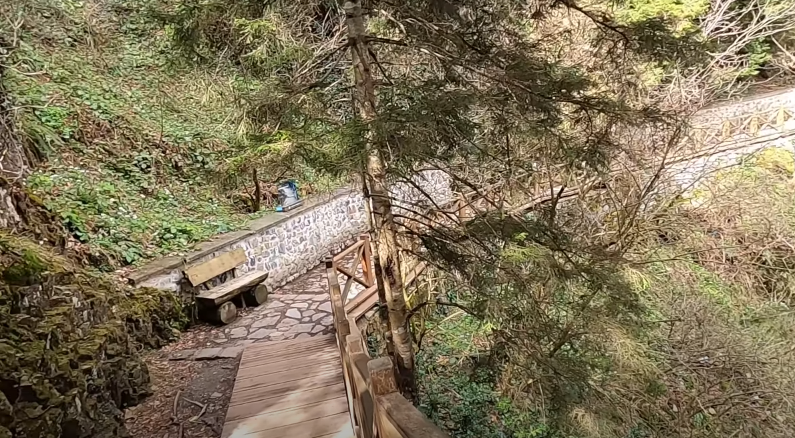У подножья горы, в которой высечен монастырь, находится туристическая база и кафе.
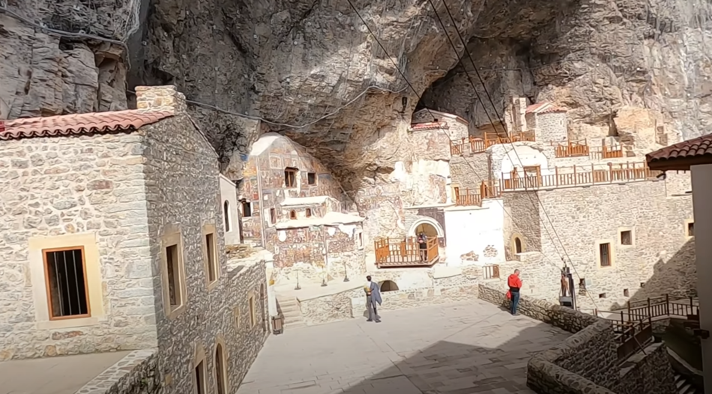Пещеры Чал
Пещера Чал расположена на высоте 1.500 метров над уровнем моря. Она является второй в мире по величине и пока была исследована только на 8 километров в глубину.
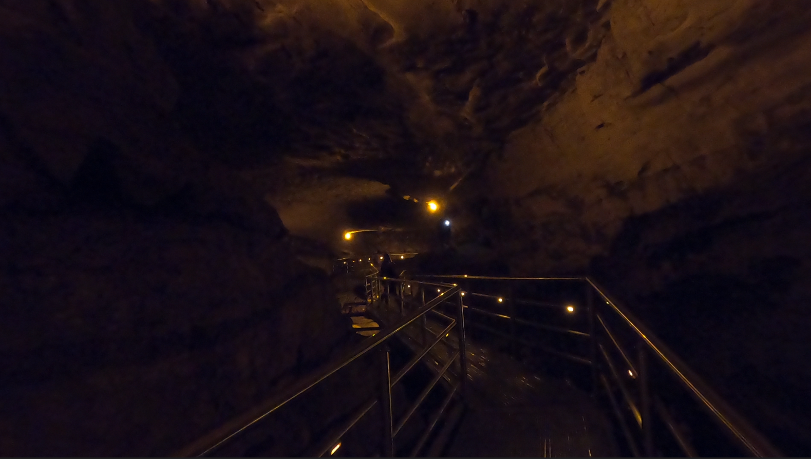Чал в течении года привлекает своей живописностью, ручьями, водопадами и прудами. Пещеру, которая является центром притяжения туристов уже на протяжении пятнадцати лет, прозвали «скрытый рай».
Сразу через 200 метров от главного входа пещера Чал разделяется на два тунеля, где сооружены две деревянные дорожки длиной 150 метров и 400 метров.
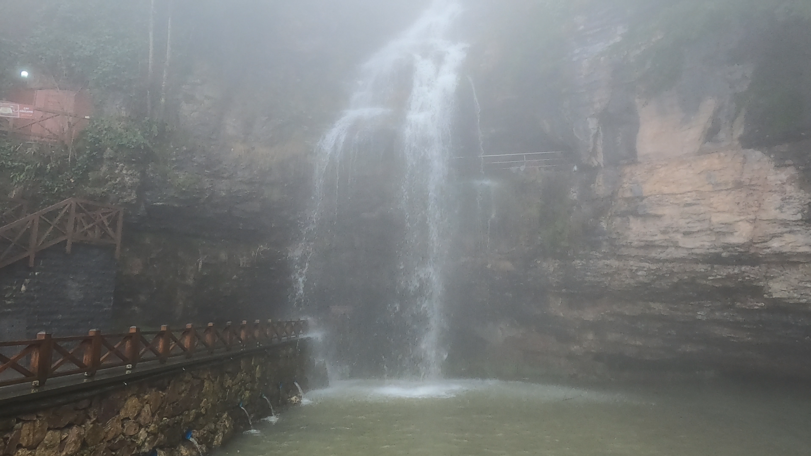Так как в этом месте очень высокая влажность, здесь часто стоит сильный туман.
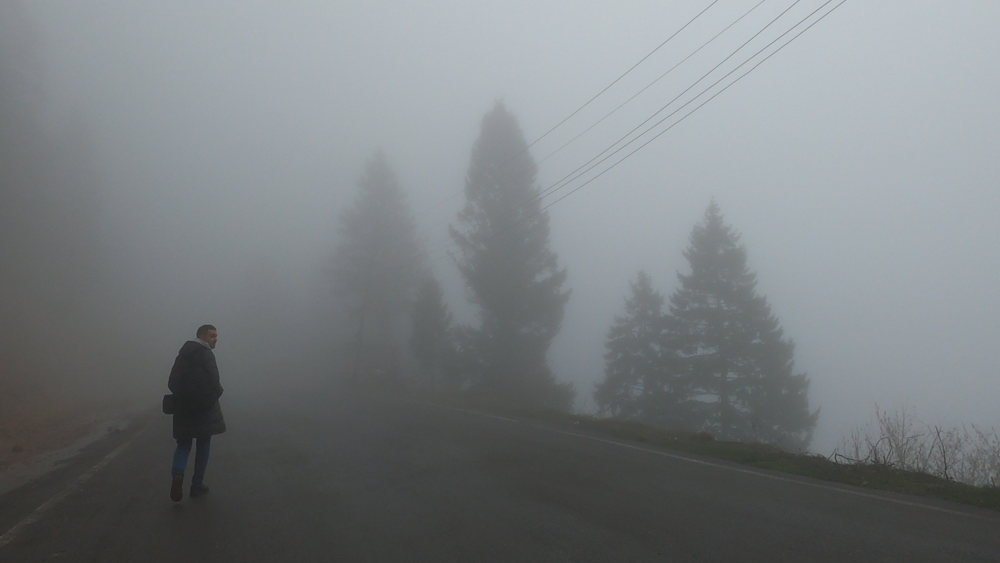Трабзонский аквариум
Трабзонский аквариум - уникальное место. Это единственный в мире аквариум, который находится в старом автомобильном шоссе.
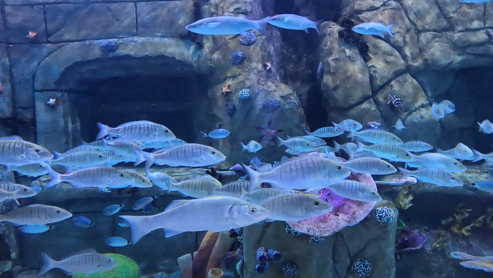Всего здесь более 1 млн. кубических метров воды и огромное количество рыб и рептилий.
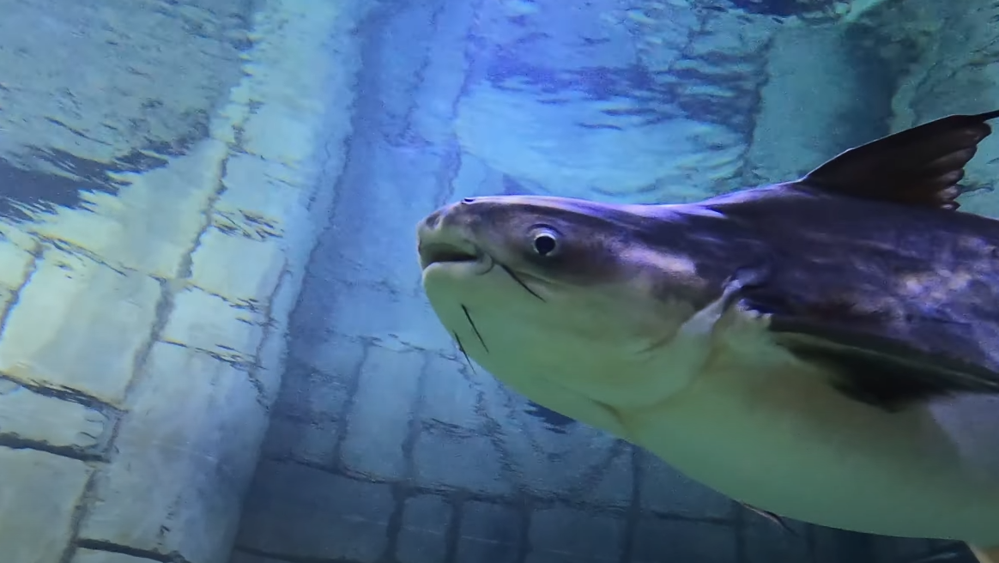Ботанический сад Трабзона
Ботанический парк в Трабзоне - локация с экзотическими растениями и местами для отдыха находится на возвышенности, с которой открывается панорамный вид на Чёрное море.

Несмотря на небольшой размер сада, здесь можно задержаться — на территории есть ресторан и детская игровая зона.
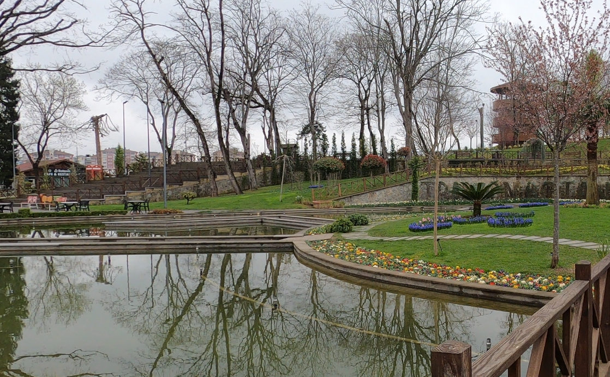Самое главное - вход бесплатный.
Женский монастырь
Монастырь Панагия Теоскепастос, сегодня известный на турецком языке как монастырь Козлар. Это бывший женский монастырь, построенный во времена Трапезундской империи в конце 14 века.
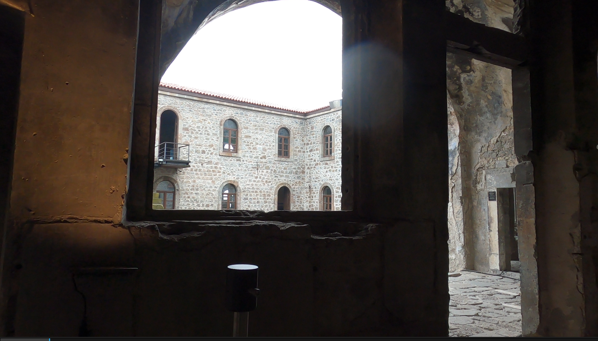Сейчас в монастыре проводятся выставки современного исскуства, а с его развалин открывается прекрасный вид на город.
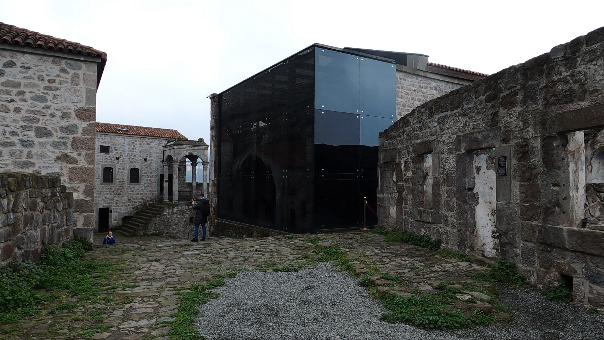Forum Trabzon
Forum Trabzon - это центр шопинга с гипермаркетом Migros, магазинами национальных и международных известных брендов, а также центром развлечений с 8-зальными кинотеатрами Cinemaximum, детской игровой площадкой, единственным в регионе боулингом и катком. Это также место встречи местных жителей с кафе и ресторанами на любой вкус.
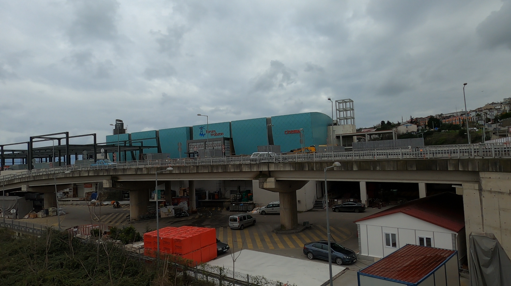 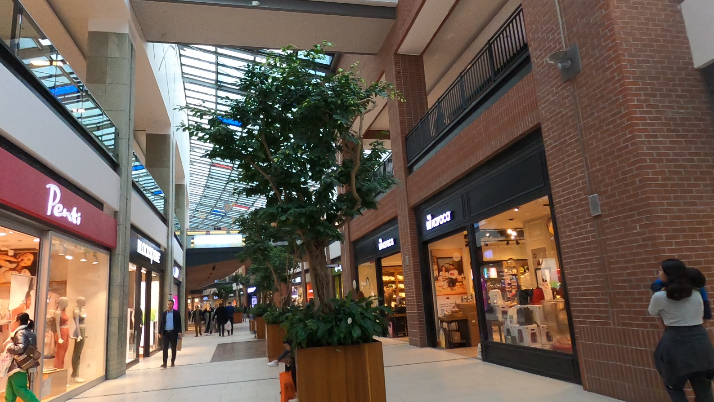Озеро Uzungol
Озеро Узунгель - потрясающе красивое место в 99 км от Трабзона. Имеет площадь 127,6 тыс. м² — 837 м в длину и 279 м в ширину в наибольшей её части. Максимальная глубина — 5,87 м

На берегу озера - много небольших кафе, откуда можно любоваться горными пейзажами и озером. А можно подняться по специальным ступеням и попасть на смотровую площадку, откуда открывается вид на озеро и всю деревню сверху.

В этой горной долине водятся бурые медведи, рыси, ястребы и множество других диких животных и растений. Территория вокруг озера носит статус природного парка.
Чайные плантации
Климат этой местности, создаваемый близостью моря и защищенностью горами, характеризуется самой большой влажностью на Черноморском побережье. Такие условия в сочетании с мягким температурным режимом, лето без изнуряющей жары и теплой зимой, идеально подошли для выращивания богатых урожаев чайной культуры.
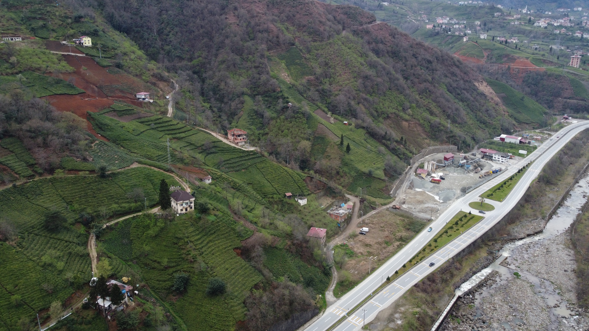Можно остановиться около любой терасы и свободно гулять среди бесконечных чайных кустов. Здешний чай - один из самых популярных в мире.
Холм Бозтепе
Бозтепе - небольшая гора, всего 530 метров - но с нее открывается потрясающий вид на Трабзон и побережье Черного моря. Наверху есть небольшой парк и несколько кафе.
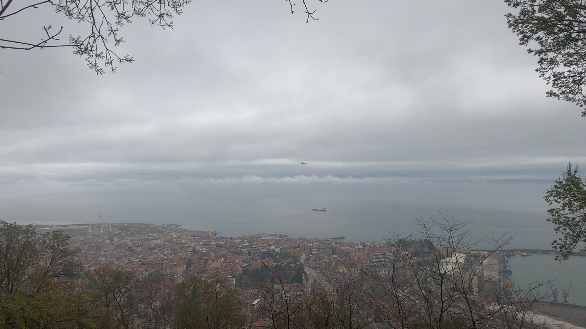Водопад Гоксу
Водопад Гоксу, также известный как Cloud Waterfall, САМЫЙ ВЫСОКИЙ водопад Турции.
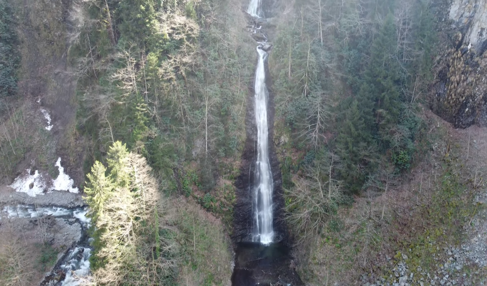Вода здесь срывается с высоты более 250 метров, водопад состоит из нескольких ступеней.
Чтобы добраться до водопада, нужно пройти 2 км вдоль горной реки по потрясающе красивой тропинке, идущей меж холмами.
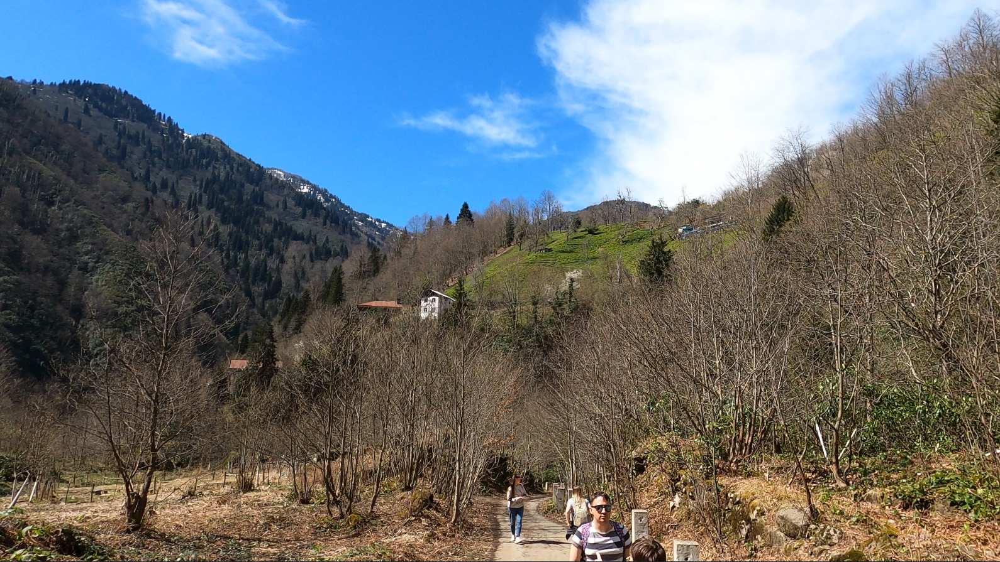Возле водопада оборудована площадка, есть домики для пикника и мост через реку.
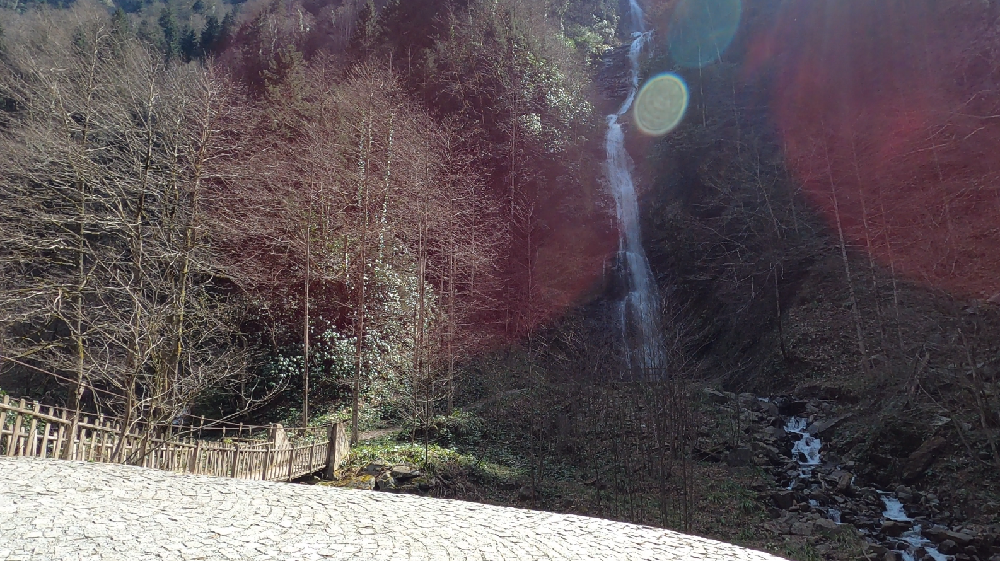Плато Айдер
Айдер - живописное горное плато, расположенное в 140 км от Трабзона. Этот природный регион называют «турецкой Швейцарией» и по красоте он не уступает европейским Альпам. Плато Айдер лежит на высоте 1350 метров над уровнем моря и представляет собой гористую местность, покрытую еловыми и буковыми лесами с горными реками, водопадами и термальными источниками.
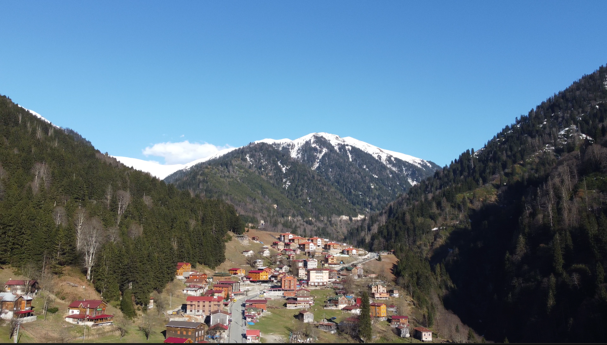Всего здесь находится 3 разных плато - советуем ехать сразу на последнее - оно самое красивое.
С плато открываются виды на заснеженные горные вершины.
Видео-обзор
Посмотреть видео нашего путешествия можно по ссылке
Спасибо, что были с нами!
Посмотрите все статьи нашего сайта про интересные места со всего мира